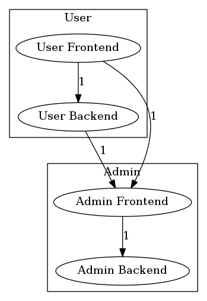

Formatters
Deptrac has support for different output formatters with various options.
You can get a list of available formatters by running
Baseline Formatter
The Baseline formatter is a console formatter, which generates
the skip_violations section to the given File. With this formatter it's
possible to start on a project with some violations without a failing CI Build.
Note: It's not the best solution to ignore all the errors because maybe your current Architecture doesn't allow a change without a new violation.
It can be activated with --formatter=baseline.
Supported options:
Don't forget to include the baseline into your existing deptrac.yaml
Console Formatter
This formatter dumps basic information to STDOUT,
examples\MyNamespace\Repository\SomeRepository::5 must not depend on examples\MyNamespace\Controllers\SomeController (Repository on Controller)
GitHubActions Formatter
The GithubActions formatter is a console formatter, which dumps basic information
in github-actions format to STDOUT. This formatter is enabled by default while
running in a GitHub actions environment. It can be activated manually
with --formatter=github-actions.
::error file=/home/testuser/originalA.php,line=12::ACME\OriginalA must not depend on ACME\OriginalB (LayerA on LayerB)
Graphviz Formatters
There is a whole family of Graphviz formatters for you to choose from depending on what type of output you are expecting. They can be activated with:
--formatter=graphviz-display Automatically tries to open the image
--formatter=graphviz-dot Saves the output to a .dot file
--formatter=graphviz-html Saves the output to a .html file
--formatter=graphviz-image Saves the output to a supported image file format such as png, svg or jpg
Supported options:
Hide layers in output
Under formatters.graphviz.hidden_layers you can define a list of layers you
do not want to include when using the corresponding graphviz output formatter.
The generated image will not contain these layers, but they will be part of the
analysis.
There are 2 main use-cases for this feature:
- Hiding a generic/general domains like the
vendorfolder - Having multiple "views" for your architecture. You can define a shared file
with all your
layersand arulesetand then have multiple config files for the differenthidden_layers. Using thegraphvizformatter with these files will then generate graphs focusing on only the relevant layers.
deptrac:
layers:
-
name: Utils
collectors:
-
type: classLike
value: .*Util.*
-
name: Controller
collectors:
-
type: classLike
value: .*Controller.*
ruleset:
Controller:
- Utils
formatters:
graphviz:
hidden_layers:
- Utils
Group layers
Another supported option is formatters.graphviz.groups. There you can sort
layers into groups that will be rendered as sub-graphs in GraphViz output.
The following config:
deptrac:
layers:
- User Frontend
- User Backend
- Admin Frontend
- Admin Backend
formatters:
graphviz:
groups:
User:
- User Frontend
- User Backend
Admin:
- Admin Frontend
- Admin Backend
Will produce the following graph:

Pointing to groups instead of nodes
With formatters.graphviz.pointToGroups set to true, when you have a node inside a groups with the same name as the group itself, edges pointing to that node will point to the group instead. This might be useful for example if you want to provide a "public API" for a module defined by a group.
MermaidJS Formatter
The MermaidJS formatter is a console formatter, which generates a mermaid.js compatible graph definition. It can be activated with --formatter=mermaidjs.
With the -o option you can specify the output file.
Available options:
With this example Yaml Config:deptrac:
layers:
- User Frontend
- User Backend
- Admin Frontend
- Admin Backend
formatters:
mermaidjs:
direction: TD
groups:
User:
- User Frontend
- User Backend
Admin:
- Admin Frontend
- Admin Backend
This will produce the following graph:
flowchart TD;
subgraph ContractGroup;
Contract;
end;
subgraph SupportiveGroup;
Supportive;
File;
end;
subgraph SymfonyGroup;
Console;
DependencyInjection;
OutputFormatter;
end;
subgraph CoreGroup;
Analyser;
Ast;
Dependency;
InputCollector;
Layer;
end;
Contract -->|6| Symfony;
InputCollector -->|3| File;
InputCollector -->|7| Symfony;
Dependency -->|36| Ast;
Layer -->|68| Ast;
Layer -->|8| Symfony;
Analyser -->|18| Ast;
Analyser -->|23| Dependency;
Analyser -->|6| Layer;
Analyser -->|10| Symfony;
Ast -->|3| Symfony;
Ast -->|3| InputCollector;
Ast -->|7| File;
OutputFormatter -->|5| Symfony;
OutputFormatter -->|1| DependencyInjection;
File -->|9| Symfony;
DependencyInjection -->|37| Symfony;
Console -->|66| Symfony;
Console -->|2| DependencyInjection;
Console -->|16| Analyser;
Console -->|5| File;
Console -->|4| OutputFormatter;
Console -->|4| Time;
Configuring default node options for custom node shapes
You can configure the default node options for the MermaidJS formatter in deptrac using the formatters.mermaidjs.default_node_options setting. This allows you to specify the shape of the nodes. For instance, setting the node shape to stadium will apply this shape to all nodes.
Example YAML Configuration:
deptrac:
layers:
- LayerA
- LayerB
- LayerC
- LayerD
- IrrelevantLayer
formatters:
mermaidjs:
direction: TD
hidden_layers:
- IrrelevantLayer
groups:
UserGroup:
- LayerA
- LayerB
AdminGroup:
- LayerC
- LayerD
default_node_options:
shape: stadium
PHP Configuration:
use Deptrac\Deptrac\Contract\Config\DeptracConfig;
use Deptrac\Deptrac\Contract\Config\Formatter\MermaidJsConfig;
// ...
return static function (DeptracConfig $config): void {
// ...
$config->formatters(
MermaidJsConfig::create()
->direction('TD')
->hiddenLayers('IrrelevantLayer')
->groups('UserGroup', $layerA, $layerB)
->groups('AdminGroup', $layerC, $layerD)
->setDefaultNodeShape('stadium')
);
};
This configuration will produce the following graph:
flowchart TD;
subgraph UserGroup;
LayerA;
LayerB;
end;
subgraph AdminGroup;
LayerC;
LayerD;
end;
LayerA@{shape: stadium} -->|2| LayerC@{shape: stadium};
LayerB@{shape: stadium} -->|1| LayerC@{shape: stadium};
LayerA@{shape: stadium} -->|2| LayerB@{shape: stadium};
LayerC@{shape: stadium} -->|1| LayerD@{shape: stadium};
JSON Formatter
By default, Json formatter dumps information to STDOUT. It can be activated
with --formatter=json
{
"Report": {
"Violations": 1,
"Skipped violations": 2,
"Uncovered": 1,
"Allowed": 0,
"Warnings": 0,
"Errors": 0
},
"files": {
"src/ClassA.php": {
"violations": 2,
"messages": [
{
"message": "ClassA must not depend on ClassB (LayerA on LayerB)",
"line": 12,
"type": "error"
},
{
"message": "ClassA should not depend on ClassC (LayerA on LayerB)",
"line": 15,
"type": "warning"
}
]
},
"src/ClassC.php": {
"violations": 1,
"messages": [
{
"message": "ClassC should not depend on ClassD (LayerA on LayerB)",
"line": 10,
"type": "warning"
}
]
},
"src/OriginalA.php": {
"violations": 1,
"messages": [
{
"message": "OriginalA has uncovered dependency on OriginalB (LayerA)",
"line": 5,
"type": "warning"
}
]
}
}
}
Supported options:
JUnit Formatter
The JUnit formatter dumps a JUnit Report XML file, which is quite handy in CI
environments. It is disabled by default, to activate the formatter just
use --formatter=junit.
<?xml version="1.0" encoding="UTF-8"?>
<testsuites>
<testsuite id="1"
package=""
name="Controller"
timestamp="2018-06-07T10:09:34+00:00"
hostname="localhost"
tests="3"
failures="2"
errors="0"
time="0">
<testcase name="Controller-examples\Layer1\AnotherClassLikeAController"
classname="examples\Layer1\AnotherClassLikeAController"
time="0">
<failure message="examples\Layer1\AnotherClassLikeAController:5 must not depend on examples\Layer2\SomeOtherClass (Controller on Layer2)"
type="WARNING" />
<failure message="examples\Layer1\AnotherClassLikeAController:23 must not depend on examples\Layer2\SomeOtherClass (Controller on Layer2)"
type="WARNING" />
</testcase>
</testsuite>
<testsuite id="2"
package=""
name="Layer2"
timestamp="2018-06-07T10:09:34+00:00"
hostname="localhost"
tests="3"
failures="4"
errors="0"
time="0">
<testcase name="Layer2-examples\Layer2\SomeOtherClass2"
classname="examples\Layer2\SomeOtherClass2"
time="0">
<failure message="examples\Layer2\SomeOtherClass2:5 must not depend on examples\Layer1\SomeClass2 (Layer2 on Layer1)"
type="WARNING" />
<failure message="examples\Layer2\SomeOtherClass2:17 must not depend on examples\Layer1\SomeClass2 (Layer2 on Layer1)"
type="WARNING" />
</testcase>
<testcase name="Layer2-examples\Layer2\SomeOtherClass"
classname="examples\Layer2\SomeOtherClass"
time="0">
<failure message="examples\Layer2\SomeOtherClass:5 must not depend on examples\Layer1\SomeClass (Layer2 on Layer1)"
type="WARNING" />
<failure message="examples\Layer2\SomeOtherClass:17 must not depend on examples\Layer1\SomeClass (Layer2 on Layer1)"
type="WARNING" />
</testcase>
</testsuite>
</testsuites>
Supported options:
Table Formatter
The default formatter is the table formatter, which groups results by layers to its own table. It can be also
activated with --formatter=table.
Codeclimate Formatter
By default, Codeclimate formatter dumps information to STDOUT. It can be activated
with --formatter=codeclimate
This formatter is compatible with GitLab CI.
Supported options:
Change severity of a violation
Under formatters.codeclimate.severity you can define which severity string you want to assign to a given violation type. By default, deptrac uses major for failures, minor for skipped violations and info for uncovered dependencies.
Example issue raport
[
{
"type": "issue",
"check_name": "Dependency violation",
"fingerprint": "3c6b66029bacb18446b7889430ec5aad7fae01cb",
"description": "ClassA must not depend on ClassB (LayerA on LayerB)",
"categories": ["Style", "Complexity"],
"severity": "major",
"location": {
"path": "ClassA.php",
"lines": {
"begin": 12
}
}
}
]